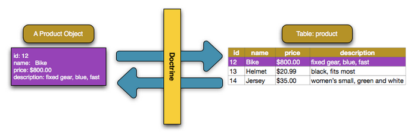

Symfony
avouez... vous regrettez déjà de ne pas l'avoir connu plus tôt.
Une présentation par Anthony Rossi / AMI Software
Montpellier, le soleil, tout ça...
Symfony 3, qu'est-ce que c'est ?
Un framework ?
- Evolution facile
- Code épuré
- Boite à outils
- Automatisation des tâches récurrentes
- Testé industriellement par plein de lutins
- Une méthodologie
- Composants (REDISTRIBUABLE & AUTONOME)
Symfony : Principes fondamentaux

Outils Symfony
Outils standalone: Symfony Components
- HttpFoundation
- Routing
- Form
- Validator
- Templating
- Security
- Translation
Symfony Framework
2 tâches :
- Fourni une sélection de librairies
- Fourni une configuration solide et attache tous les composants ensemble.
Environnements
-
Environnements de base :
- Prod
- Dev
- Test
- Différents fichiers de configuration :
- app/config/config_prod.yml
- app/config/config_dev.yml
- app/config/config_test.yml
- Différents points d'entrée :
- web/app.php
- web/app_dev.php
Contrôleurs
Généralités
- Récupère une requête HTTP (objet Request) et retourne une réponse HTTP (objet Response).
<?php
use Symfony\Component\HttpFoundation\Response;
public function helloAction()
{
return new Response('Hello world!');
}Cycle de vie
- Chaque requête exécute un fichier du contrôleur frontal (app.php, app_dev.php)
- Le front contrôleur initialize le kernel Symfony et passe un objet Request à gérer.
- Symfony core demande au composant router d'inspecter la requête.
- Le router match l'URL à une route spécifique et retourne les informations sur la route.
- Le contrôleur retourné par le router est exécuté, qui crée et retourne l'objet Response approprié.
- Les headers HTTP et le contenu de la Response sont retournés au client.
namespace NinjaFactory\GameBundle\Controller;
use Symfony\Component\HttpFoundation\Request;
use Symfony\Bundle\FrameworkBundle\Controller\Controller;
class GameController extends Controller
{
public function indexAction(Request $request)
{
$games = $this->doctrine->getRepository(Game::class)->findAll();
return $this->render('game/index.html.twig', array(
'games' => $games,
));
}
}
Routing
- URLs sexy (index.php?game_slug=halo devient /game/halo)
- Flexibilité (changement facile des routes)
- Routes complexes (expressions régulières, etc.)
- Génération facile
- Debug inclu
Création de routes
Formats de création
- PHP
- YAML
- XML
- Annotation (à l'intérieur des contrôleurs)
Création de routes
En YAML...
game_show:
path: /games/{slug}
defaults: { _controller: NinjaFactory:GameBundle:Game:show }
methods: [GET]
article_list:
path: /articles/{page}
defaults: { _controller: NinjaFactory:BlogBundle:Aticle:list, page: 1 }
requirements:
page: \d+
methods: [GET, HEAD]Génération d'URLs
En PHP
$uri = $this->get('router')->generate('game_show', array(
'slug' => 'halo-5'
));
// /games/halo-5En TWIG
<a href="{{ path('game_show', {'slug': 'halo-5'}) }}">
See Halo 5 page
</a>Templating : Twig
- Code clair et lisible
- Héritage de templates et de layouts
- Tags et helpers
- Pleins d'autres trucs en fait
{# app/Resources/views/game/list.html.twig #}
{% extends 'layout.html.twig' %}
{% block body %}
<h1>Last games created<h1>
{% for game in games %}
{{ include('game/game_list.html.twig', { 'game': game }) }}
{% endfor %}
{% endblock %}Les bundles
- Plugin-like
- Tout est bundle
- Un bundle est un ensemble structuré de fichiers...
- ...de différents types
Activation des bundles
// app/AppKernel.php
public function registerBundles()
{
$bundles = array(
new Symfony\Bundle\FrameworkBundle\FrameworkBundle(),
new Symfony\Bundle\SecurityBundle\SecurityBundle(),
new Symfony\Bundle\TwigBundle\TwigBundle(),
new Symfony\Bundle\MonologBundle\MonologBundle(),
new Symfony\Bundle\SwiftmailerBundle\SwiftmailerBundle(),
new Symfony\Bundle\DoctrineBundle\DoctrineBundle(),
new Symfony\Bundle\AsseticBundle\AsseticBundle(),
new Sensio\Bundle\FrameworkExtraBundle\SensioFrameworkExtraBundle(),
new AppBundle\AppBundle(),
);
if (in_array($this->getEnvironment(), array('dev', 'test'))) {
$bundles[] = new Symfony\Bundle\WebProfilerBundle\WebProfilerBundle();
$bundles[] = new Sensio\Bundle\DistributionBundle\SensioDistributionBundle();
$bundles[] = new Sensio\Bundle\GeneratorBundle\SensioGeneratorBundle();
}
return $bundles;
}Structure de fichiers d'un bundle
Dossiers de base
- Controller/Contient les... contrôleurs \o/
- DependencyInjection/Détient certaines classes d'extension du Dependency Injection : importation des configurations des services, enregistrement des passes du compilateur ou autre.
- Entity/Contient les entités
- Form/Contient les formulaires
- Resource/config/Contient la configuration (routing.yml, services.yml, ...)
- Resource/views/Contient les templates organisés, si possible, par nom de contrôleur.
- Resource/public/Contient les assets web (images, style, ...). Ce répertoire sera copié dans /web via la commande
assets:install. - Tests/Une idée ?
L'ORM : Doctrine
- Persistance et lecture d'information. Tâche commune et redondance à (presque) chaque application.
- ORM: Couche d'abstraction
- ORM supportés par Symfony : Doctrine et Propel
- Doctrine ORM intégré par défaut dans Symfony Standard Edition.
Création d'une entité
// src/AppBundle/Entity/Product.php
namespace AppBundle\Entity;
class Product
{
private $name;
private $price;
private $description;
// Getters and Setters here (can be auto generated by doctrine command)
}Ajout de l'information de mapping
Ajout de l'information de mapping
// src/AppBundle/Entity/Product.php
namespace AppBundle\Entity;
use Doctrine\ORM\Mapping as ORM;
/**
* @ORM\Entity
* @ORM\Table(name="product")
*/
class Product
{
/**
* @ORM\Column(type="integer")
* @ORM\Id
* @ORM\GeneratedValue(strategy="AUTO")
*/
private $id;
/**
* @ORM\Column(type="string", length=100)
*/
private $name;
/**
* @ORM\Column(type="decimal", scale=2)
*/
private $price;
/**
* @ORM\Column(type="text")
*/
private $description;
// Getters and Setters here
}Enregistrement d'objet dans la base
// src/AppBundle/Controller/DefaultController.php
// ...
use AppBundle\Entity\Product;
use Symfony\Component\HttpFoundation\Response;
// ...
public function createAction()
{
$product = new Product();
$product->setName('Keyboard');
$product->setPrice(19.99);
$product->setDescription('Ergonomic and stylish!');
$em = $this->getDoctrine()->getManager();
// tells Doctrine you want to (eventually) save the Product (no queries yet)
$em->persist($product);
// actually executes the queries (i.e. the INSERT query)
$em->flush();
// After the flush, product has an ID ($product->getId())
return new Response('Saved new product with id '.$product->getId());
}Récupération d'objets dans la base
public function showAction($productId)
{
$product = $this->getDoctrine()
->getRepository('AppBundle:Product')
->find($productId);
if (!$product) {
throw $this->createNotFoundException(
'No product found for id '.$productId
);
}
// ... do something, like pass the $product object into a template
}Autres méthodes de récupération
// query for a single product by its primary key (usually "id")
$product = $repository->find($productId);
// dynamic method names to find a single product based on a column value
$product = $repository->findOneById($productId);
$product = $repository->findOneByName('Keyboard');
// dynamic method names to find a group of products based on a column value
$products = $repository->findByPrice(19.99);
// find *all* products
$products = $repository->findAll();
// query for a single product matching the given name and price
$product = $repository->findOneBy(
array('name' => 'Keyboard', 'price' => 19.99)
);
// query for multiple products matching the given name, ordered by price
$products = $repository->findBy(
array('name' => 'Keyboard'),
array('price' => 'ASC')
);Mise à jour d'objet dans la base
public function updateAction($productId)
{
$em = $this->getDoctrine()->getManager();
$product = $em->getRepository('AppBundle:Product')->find($productId);
if (!$product) {
throw $this->createNotFoundException(
'No product found for id '.$productId
);
}
$product->setName('New product name!');
$em->flush();
return $this->redirectToRoute('homepage');
}Suppression d'objet dans la base
$em->remove($product);
$em->flush();Requêtage d'objets
Avec DQL
$em = $this->getDoctrine()->getManager();
$query = $em->createQuery(
'SELECT p
FROM AppBundle:Product p
WHERE p.price > :price
ORDER BY p.price ASC'
)->setParameter('price', '19.99');
$products = $query->getResult(); // Return array of Product objectsRequêtage d'objets
Avec le QueryBuilder doctrine
$em = $this->getDoctrine()->getManager();
// createQueryBuilder automatically selects FROM AppBundle:Product
// and aliases it to "p"
$query = $repository->createQueryBuilder('p')
->where('p.price > :price')
->setParameter('price', '19.99')
->orderBy('p.price', 'ASC')
->getQuery();
$products = $query->getResult();
// to get just one result:
// $product = $query->setMaxResults(1)->getOneOrNullResult();Intégration de doctrine avec profile Symfony
Relations et associations
// src/AppBundle/Entity/Category.php
// ...
use Doctrine\Common\Collections\ArrayCollection;
class Category
{
// ...
/**
* @ORM\OneToMany(targetEntity="Product", mappedBy="category")
*/
private $products;
public function __construct()
{
$this->products = new ArrayCollection();
}
}// src/AppBundle/Entity/Product.php
// ...
class Product
{
// ...
/**
* @ORM\ManyToOne(targetEntity="Category", inversedBy="products")
* @ORM\JoinColumn(name="category_id", referencedColumnName="id")
*/
private $category;
}
Sauvegarde des entités liées
// ...
use AppBundle\Entity\Category;
use AppBundle\Entity\Product;
use Symfony\Component\HttpFoundation\Response;
class DefaultController extends Controller
{
public function createProductAction()
{
$category = new Category();
$category->setName('Computer Peripherals');
$product = new Product();
$product->setName('Keyboard');
$product->setPrice(19.99);
$product->setDescription('Ergonomic and stylish!');
// relate this product to the category
$product->setCategory($category);
$em = $this->getDoctrine()->getManager();
$em->persist($category);
$em->persist($product);
$em->flush();
return new Response(
'Saved new product with id: '.$product->getId()
.' and new category with id: '.$category->getId()
);
}
}Récupération d'objets liés
$product = $productRepository->find($productId);
$categoryName = $product->getCategory()->getName();
Lifecycle Callbacks
// src/AppBundle/Entity/Product.php
/**
* @ORM\PrePersist
*/
public function setUpdatedDate()
{
$this->updatedDate = new \DateTime();
}Events disponibles : preRemove, postRemove, prePersist, postPersist, preUpdate, postUpdate, postLoad, loadClassMetadata, onClassMetadataNotFound, preFlush, onFlush, postFlush, onClear.
Commandes doctrine en vrac
php bin/console doctrine:database:create
php bin/console doctrine:generate:entity
php bin/console doctrine:generate:entities AppBundle/Entity/Product
php bin/console doctrine:schema:update --forceLa validation
- Tâche récurrente dans les applications web.
- Tâche ingrate
Le composant Validator de Symfony
- Basé sur la spécification JSR303 Bean Validation. (Oui, c'est une spécification Java.)
- Déclaration des validations via annotations, YAML ou PHP.
Généralités
// src/AppBundle/Entity/Author.php
// ...
use Symfony\Component\Validator\Constraints as Assert;
class Author
{
/**
* @Assert\NotBlank()
*/
public $name;
}Utilisation du service de validation
// ...
use Symfony\Component\HttpFoundation\Response;
use AppBundle\Entity\Author;
public function authorAction()
{
$author = new Author();
// ... do something to the $author object
$validator = $this->get('validator');
/** @var \Symfony\Component\Validator\ConstraintViolationList */
$errors = $validator->validate($author);
if (count($errors) > 0) {
/*
* Uses a __toString method on the $errors variable which is a
* ConstraintViolationList object. This gives us a nice string
* for debugging.
*/
$errorsString = (string) $errors;
return new Response($errorsString);
}
return new Response('The author is valid! Yes!');
}Affichage des erreurs
if (count($errors) > 0) {
return $this->render('author/validation.html.twig', array(
'errors' => $errors,
));
}{# app/Resources/views/author/validation.html.twig #}
<h3>The author has the following errors</h3>
<ul>
{% for error in errors %}
<li>{{ error.message }}</li>
{% endfor %}
</ul>Contraintes
Symfony inclu directement les contraintes les plus utilisées :
- Générales: NotBlank, Blank, NotNull, IsNull, IsTrue, IsFalse, Type
- String: Email, Length, Url, Regex, Ip, Uuid
- Nombres: Range
- Comparaison: EqualTo, NotEqualTo, IdenticalTo, NotIdenticalTo, LessThan, LessThanOrEqual, GreaterThan, GreaterThanOrEqual
- Date: Date, DateTime, Time
- Collection: Choice, Collection, Count, UniqueEntity, Language, Locale, Country
- Fichier: File, Image
- Financier et autres: Bic, CardScheme, Currency, Luhn, Iban, Isbn, Issn
- Autres: Callback, Expression, All, UserPassword, Valid
Bien sûr, nous pouvons créer nos propres validations... !
Autres fonctionnalités
- Traduction automatique des messages d'erreur
- Groupes de validation
- Validation des entités en profondeur (parcourt d'entités au besoin)
Les formulaires
- Complexe
- Génératrice de bugs
- HTML redondant
- Validation redondante
Fonctionnalités
- Validation de formulaires
- Beaucoup de types de champs pré-existant
- Rendu du formulaire dans un template extrèmement puissant
- Système d'événement pour faire des formulaires dynamiques
- Formulaires intégrés
- Protection CRSF
- Prototypes de formulaires \o/
Aperçu
// src/AppBundle/Form/Type/TaskType.php
namespace AppBundle\Form\Type;
use Symfony\Component\Form\AbstractType;
use Symfony\Component\Form\FormBuilderInterface;
use Symfony\Component\Form\Extension\Core\Type\SubmitType;
class TaskType extends AbstractType
{
public function buildForm(FormBuilderInterface $builder, array $options)
{
$builder
->add('task', TextType::class)
->add('dueDate', DateType::class, array('widget' => 'single_text'))
->add('save', SubmitType::class, array('label' => 'Create Task'))
;
}
}Rendu du formulaire
{# app/Resources/views/default/new.html.twig #}
{{ form_start(form) }}
{{ form_widget(form) }}
{{ form_end(form) }}
La sécurité
Gestion des droits
Chaque utilisateur a des rôles, qui est une collection de string. Par exemple, ROLE_ADMIN, ROLE_COMMENT_WRITE, ...
Sécurisation de certaines URL
# app/config/security.yml
security:
# ...
access_control:
# require ROLE_ADMIN for /admin*
- { path: ^/admin, roles: ROLE_ADMIN }Sécurisation des controleurs
// ...
public function helloAction($name)
{
// The second parameter is used to specify on what object the role is tested.
$this->denyAccessUnlessGranted('ROLE_ADMIN', null, 'Unable to access this page!');
// Old way :
// if (false === $this->get('security.authorization_checker')->isGranted('ROLE_ADMIN')) {
// throw $this->createAccessDeniedException('Unable to access this page!');
// }
// ...
}Sécurisation d'objets individuels
Deux options
- Voters Permet d'écrire votre propre logique business (ex: L'uilisateur peut éditer son post car il en est le créateur) afin de déterminer l'accès à l'utilisateur.
- ACLs Permet de créer une structure où vous pouvez assigner les accès que vous voulez (EDIT, VIEW) à n'importe quel objet du système. Utile si vous avez un administrateur capable de gérer des accès personnalisés via une interface d'administration
// check for "view" access: calls all voters
$this->denyAccessUnlessGranted('view', $post);Übersetzungen Les traductions
Fonctionnalités
- Fallback de langues : fr_CA -> fr -> en
- Pluralisation (gestion Russe, ...)
- Surcharge des traductions de bundles externes
Traductions définies en
- YAML
- XLIFF (XML)
- PHP
Exemple basique
use Symfony\Component\HttpFoundation\Response;
public function indexAction()
{
$translated = $this->get('translator')->trans('app.comment.action.add');
return new Response($translated);
}# Obtao\ForumBundle\Resources\translations\messages.fr.yml
app: # Bundle name
comment: # Object name
action: # Type: action (button, ...)
add: Nouveau commentaire
title: # Type: title (h1, h2...)
listPage: Tous les commentaires
# ...Traductions des messages de validation
// src/AppBundle/Entity/Author.php
use Symfony\Component\Validator\Constraints as Assert;
class Author
{
/**
* @Assert\NotBlank(message = "app.author.name.notBlank")
*/
public $name;
}Vive la console !
$ php bin/console debug:translation fr AcmeDemoBundleGestion du pluriel
(($number % 10 == 1) && ($number % 100 != 11))
? 0
: ((($number % 10 >= 2)
&& ($number % 10 <= 4)
&& (($number % 100 < 10)
|| ($number % 100 >= 20)))
? 1
: 2
);$translator->transChoice(
'There is one apple|There are %count% apples',
10,
array('%count%' => 10)
);'There is one apple|There are %count% apples''Il y a %count% pomme|Il y a %count% pommes''{0} There are no apples|{1} There is one apple|]1,19] There are %count% apples|[20,Inf[ There are many apples'Le conteneur de service
- Une application PHP moderne est remplie d'objets.
- Service Container !
- Très rapide (utilise du cache)
- Améliore l'architecture
- Implémente l'Inversion de contrôle (Injection de dépendance)
- Simple
- Déclaration en YAML, PHP, XML
C'est quoi.. ?
use AppBundle\Mailer;
$mailer = new Mailer('sendmail');
$mailer->send('ryan@example.com', ...);Création d'un service
# app/config/services.yml
services:
app.mailer:
class: AppBundle\Mailer
arguments: [sendmail]class HelloController extends Controller
{
// ...
public function sendEmailAction()
{
// ...
$mailer = $this->get('app.mailer');
$mailer->send('ryan@foobar.net', ...);
}
}Passage de paramètre
# app/config/services.yml
parameters:
app.mailer.transport: sendmail
services:
app.mailer:
class: AppBundle\Mailer
arguments: ['%app.mailer.transport%']Injection de service
# app/config/services.yml
services:
app.mailer:
# ...
app.newsletter_manager:
class: AppBundle\Newsletter\NewsletterManager
arguments: ['@app.mailer']// src/AppBundle/Newsletter/NewsletterManager.php
namespace AppBundle\Newsletter;
use AppBundle\Mailer;
class NewsletterManager
{
protected $mailer;
public function __construct(Mailer $mailer)
{
$this->mailer = $mailer;
}
// ...
}Injection de service
Hors constructeur
services:
app.mailer:
# ...
app.newsletter_manager:
class: AppBundle\Newsletter\NewsletterManager
calls:
- [setMailer, ['@app.mailer']]// src/AppBundle/Newsletter/NewsletterManager.php
namespace AppBundle\Newsletter;
use AppBundle\Mailer;
class NewsletterManager {
protected $mailer;
public function setMailer(Mailer $mailer)
{
$this->mailer = $mailer;
}
// ...
}Injection de service
Récupération de l'objet Request
services:
newsletter_manager:
class: Acme\HelloBundle\Newsletter\NewsletterManager
arguments: ["@request_stack"]namespace Acme\HelloBundle\Newsletter;
use Symfony\Component\HttpFoundation\RequestStack;
class NewsletterManager
{
protected $requestStack;
public function __construct(RequestStack $requestStack)
{
$this->requestStack = $requestStack;
}
public function anyMethod()
{
$request = $this->requestStack->getCurrentRequest();
// ... do something with the request
}
// ...
}Service optionnel
# app/config/services.yml
services:
app.newsletter_manager:
class: AppBundle\Newsletter\NewsletterManager
arguments: ['@?app.mailer']public function __construct(Mailer $mailer = null)
{
// ...
}Les services taggués
# app/config/services.yml
services:
foo.twig.extension:
class: AppBundle\Extension\FooExtension
public: false
tags:
- { name: twig.extension }use Symfony\Component\DependencyInjection\ContainerBuilder;
use Symfony\Component\DependencyInjection\Compiler\CompilerPassInterface;
use Symfony\Component\DependencyInjection\Reference;
class TransportCompilerPass implements CompilerPassInterface
{
public function process(ContainerBuilder $container)
{
if (!$container->has('acme_mailer.transport_chain')) {
return;
}
$definition = $container->findDefinition(
'acme_mailer.transport_chain'
);
$taggedServices = $container->findTaggedServiceIds(
'acme_mailer.transport'
);
foreach ($taggedServices as $id => $tags) {
$definition->addMethodCall(
'addTransport',
array(new Reference($id))
);
}
}
}Autres
Bundles populaires
FOSUserBundle
- Gestion des utilisateurs
- Stockage Doctrine ou ODM ou Propel
- Formulaire d'inscription
- Mot de passe oublié
- ...
StofDoctrineExtension‐Bundle
- Installe et configure 11 extensions Doctrine2
- l3pp4rd / DoctrineExtensions
/**
* @Gedmo\Timestampable(on="create")
* @ORM\Column(type="datetime")
*/
private $created;
/**
* @Gedmo\Blameable(on="create")
* @ORM\Column(type="string")
*/
private $createdBy;♥ FOS ♥
- FOSCommentBundle
- FOSOAuthServerBundle
- FOSMessageBundle
- FOSFacebookBundle
- FOSTwitterBundle
- FOSJsRoutingBundle
- FOSElastica
Bonus: Méthodologie et organisation du CSS avec SASS
Ressources
- Bonnes pratiques en CSS : BEM et OOCSS
- DoCSSa 2.0 (Sass based CSS architecture and methodology)
- SASSDOC Création automatique de docs d'un projet SASS